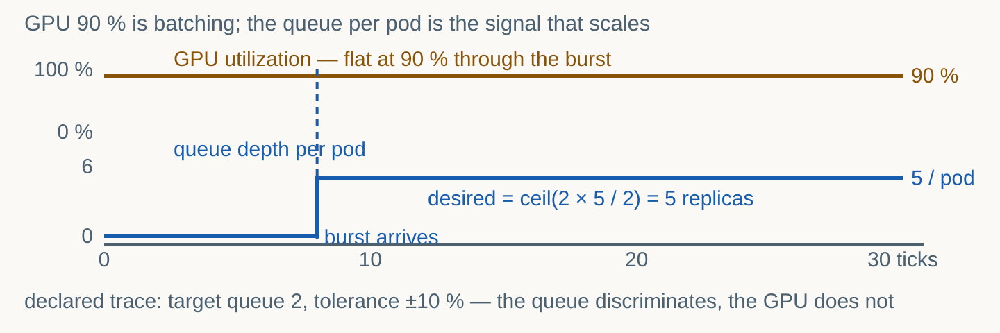
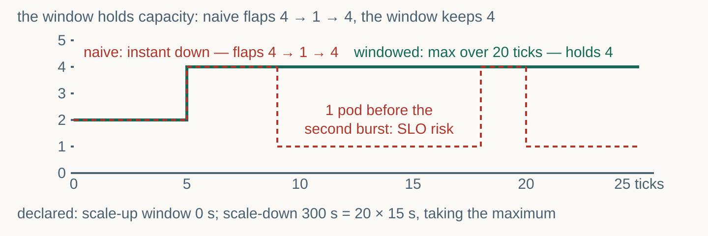
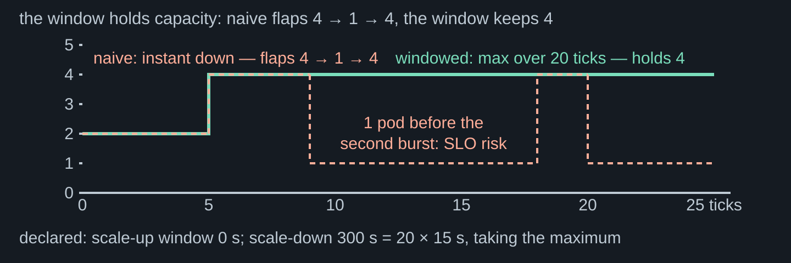

One pod, many clients —
and the HPA
The controller that sizes the declared fleet — and the signal that does not lie.
Where Topic 11 left us
Topic 12 · draftThe fleet is declared
Pods carry the ledger, probes budget the boot, releases are versioned history. One number is still human: how many replicas? A static answer is wrong in both directions — idle GPUs burn money, and a burst is real (T8: 24 arrivals met an envelope built for 8 — 16 honest 429s).
Enter the controller
The HorizontalPodAutoscaler closes the loop: read a metric, compute desired = ceil(replicas × metric / target), clamp to [min, max]. One formula, three guards — the tolerance band, the clamp, and the stabilization windows — and one honest cost: every new pod pays the 165 s boot.
GPU 90 % is batching, not overload
Topic 12 · draft

ceil(2 × 5 / 2) = 5 replicas.The signals that do not lie
Topic 12 · draftWhat serving actually feels
Queue depth per pod — demand waiting at the door. KV-cache pressure — the T02 scarcity, now as a gauge. TTFT — the client-visible promise bending. These need custom metrics: the stock HPA reads CPU and memory, which say nothing here.
How prod wires it
Prometheus Adapter feeds custom metrics into the stock HPA; KEDA adds event-driven scalers (and scale-to-zero); llm-d's WVA weighs several signals into one desired-replica verdict. The lab trains the arithmetic they all share — the formula is the contract.
The HPA formula
Topic 12 · draftint()max exists so a bug cannot rent the clusterint(): int(2.5) = 2 quietly refuses the fifth pod's worth of demand.One formula, three guards
Topic 12 · draftTolerance: the dead band
Topic 12 · draftWhy a thermostat has one
A thermostat that fires at every 0.1 ° clicks on and off all night. The HPA's band is ±10 %: a ratio of 1.05 holds; exactly 1.1 also holds — the edges are inclusive, so a metric parked at the boundary cannot flap the fleet on noise.
The cost of a missing band
Without it, every tick near the target is a scale event: pods churn, boots queue behind boots, the bill oscillates. Ex2 pins the boundary case, and the follow-up quiz asks the reason — inclusive edges are what make the band a band and not a knife edge.
Windows: up fast, down slow
Topic 12 · draftThe asymmetry
Scale-up window: 0 s — pain is now, add pods immediately. Scale-down window: 300 s, and the controller takes the maximum recommendation over the window — not the latest. Sync period 15 s → the lab's model: 20 ticks of memory.
Why the maximum
Traffic is spiky; a quiet minute proves nothing. Taking the max means one spike inside the window keeps the fleet big for the full 300 s — capacity is released only when twenty consecutive ticks agree it is safe. The next slide shows the flapping this prevents.
The window in one picture
Topic 12 · draft

1 pod — the SLO dies in the gap. The windowed controller holds 4: the maximum of the trailing twenty recommendations only releases capacity when the quiet is twenty ticks old.Cold start makes down cautious
Topic 12 · draftEvery new pod pays the boot
The 165 s of Topic 11 is the price of elasticity here: a scale-up decision takes effect in one tick, but usable capacity arrives only after the weights land. Scale-down too early hands that price back at the next burst — with interest (queued clients).
The floor under the floor
minReplicas is the promise you never break: below it nothing scales, even in a total quiet. And if the fleet is at 1 and that pod dies, the replacement's boot is a 503 window — the drill in a few slides counts exactly what that costs.
Fix the bug: the flutter
Topic 12 · draftThe broken timeline
Ex3 hands the students a controller that scales down instantly: on a sawtooth metric it flaps 1 ↔ 2 ↔ 1. Two costs, both visible: the SLO dies on every down (capacity vanished), and the bill jerks — boots queue behind boots.
The fix, in one line
Scale-down reads the maximum recommendation over the trailing 300 s (20 ticks); scale-up stays instant. Hidden edges the tests pin: a window of exactly 20 ticks counts as the window, and a peak inside the window holds the replicas — the past votes louder than the latest tick.
HPASim: the capstone
Topic 12 · draftThe failure drill
Topic 12 · draftKill a pod, count the loss
Two replicas at the working point: 2 × 250 = 500 tok/s. Kill one: 250 tok/s until the replacement boots — 165 s of half capacity. At minReplicas 1 the same kill is a 503 window: the boot plus scheduling, with clients bouncing off.
The vocabulary of eviction
PodDisruptionBudget: how many pods voluntary drains may take at once — the drill's floor. minReplicas: the HPA's floor — noise cannot scale below it. The milestone wants incident notes: what broke, what it cost in tok/s, how long the window lasted.
Practice: what prod scales on
Topic 12 · draftThe plumbing
Prometheus Adapter: export queue depth, feed it to the stock HPA as a custom metric. KEDA: event-driven scalers, including scale-to-zero — a serverless voice. llm-d WVA: weighs several serving signals into one desired-replica verdict.
The constant
All of it ends in the same arithmetic: a ratio, a ceiling, a clamp, windows. The stacks differ in who measures and who decides — not in the decision itself. vLLM's production stack adds a KV-cache-aware router in front, so scale events land on warmed pods.
The T03 bridge: quantize the boot
Topic 12 · draftWhat INT4 changes
A quantized engine (T03) carries roughly half the weight bytes — the extract → weights member of the boot shrinks, so the 165 s cold start and the elastic scale-up's hidden cost shrink with it. Smaller pods also fit more replicas per node.
What INT4 does not change
The HPA's policy is untouched: same formula, same band, same windows — the controller never knew or cared about weight precision. Quantization improves the cost of elasticity; the topic's arithmetic decides when to be elastic.
Lab 12: the map
Topic 12 · draftTen checkpoints
Quizzes q1–q3 with "why" follow-ups (the clamp, the inclusive edge, the window). Exercises: desired_replicas — the int() trap → hpa_step band → fix the flutter → capstone HPASim. Posttest p1–p3 plus the T03 bridge.
The star challenge
Outside the count: absorb a burst of 60 arrivals in one tick and keep the step ≤ 120 ms — choose target_queue × max_replicas from the grid; the page replays the controller arithmetic and rejects invented numbers. The reference stays hidden until you pass.
Honesty: a rehearsal, not a claim
Topic 12 · draftWhat the lab claims
A declared model of a controller, not a cluster: deterministic simulators in your browser, the same fields a real HPA would read. The compose rehearsal is prose in the lab: burst 24 → 16 honest 429s (T8 numbers), then a hand "HPA tick" — replicas in compose — and the burst again.
What transfers
In a real cluster the controller runs this exact formula against metrics from a real gateway. The journal records your machine-local drills — it is not evidence; evidence lives in the course runs. Numbers are declared and named: 250 tok/s from T6, 165 s from the T09 fleet run (seminars/runs/2026-11-07-topic09-fleet-mac/README.md), 16 × 429 from T8.
Posttest, homework, the T13 bridge
Topic 12 · draftThe three answers
p1: a ratio of 1.05 inside ±10 % holds. p2: the queue sees demand; GPU utilization sees batching. p3: the 300 s window takes the maximum recommendation. Homework = the milestone: an HPA experiment (one change, measured), a capacity model (the ledger × replicas), incident notes from the drill.
Where the block goes
Topic 13 is already published: LLMOps — the dashboards read the signals this topic defined (queue, TTFT), price the GPUs this fleet burns, and verify claims against a journal. The labs 11–12 pair gave that dashboard a fleet worth watching.
Очередь — сигнал.
Утилизация — настроение.
Mind the band. Wait the window.
Size with the ledger. Drill the failure.